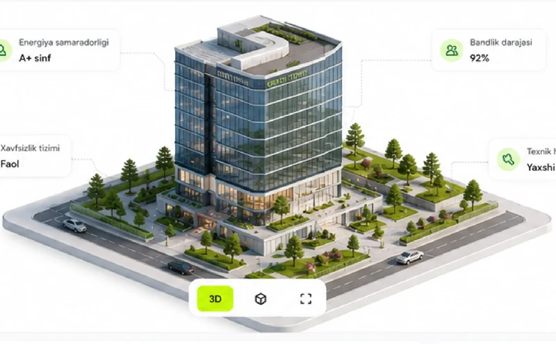

Faol
Navruz Plaza
Biznes markazi
Toshkent shahri, Shayxontohur tumani,
Navoiy ko'chasi, 15
Navoiy ko'chasi, 15
Umumiy maydon18 560 m²
Yer uchastkasi4 250 m²
Qavatlar soni12
Qurilgan yili2021
HolatiFaol

Nazorat balli—
Qoplash darajasi—
Sug'urta—
Texnik holatYaxshi
Galereya
Tavsif
Navruz Plaza – zamonaviy biznes markazi bo'lib, 12 qavatdan iborat. Bino ofis maydonlari, konferensiya zallari, yerosti avtoturargohi va to'liq infratuzilma bilan ta'minlangan.
| Tarkibiy qism | Qavat | Maydon | Kadastr birligi | Holat |
|---|
Texnik pasport.pdf · 2,4 MB · 24-may 2024
Kadastr hujjati.pdf · 1,1 MB · 12-yan 2024
Garov shartnomasi ilovasi.pdf · 860 KB
Sug'urta polisi.pdf · 640 KB
So'nggi ko'rik
—
—
Sug'urta
—
—
Baholash
—
—
Tasnif toifasi
—
—
Kommunikatsiya kirish nuqtalari
Tashrif oldidan tanishib chiqish yoki mijozga ko'rsatish uchun
Suv ta'minoti—
Gaz ta'minoti—
Elektr ta'minoti—
Kanalizatsiya—
Kommunikatsiya nuqtalarining holati ko'rik dalolatnomasida qayd etiladi; kirish kalitlari bank mas'ul xodimida saqlanadi.
Ko'rik dalolatnomasi rasmiylashtirildiHolat balli qayd etildi, fotojamlanma biriktirildiBugun, 11:42Sattorov J.
Yangi hujjat yuklandiTexnik pasport.pdfBugun, 09:15Rahimov B.
Navbatdagi ko'rik rejalashtirildiReglament bo'yicha choraklik chiqish23-avg, 16:30Karimova F.
Sug'urta polisi yangilandiNaf oluvchi — bank, qamrov baholangan qiymat bo'yicha22-avg, 14:20Qodirova N.
Qisman to'lov qabul qilindiQarzdor tomonidan ixtiyoriy so'ndirish22-avg, 10:05Soliev B.
Baholash hisoboti yangilandiYillik qayta baholash18-avg, 12:00Yusupova M.